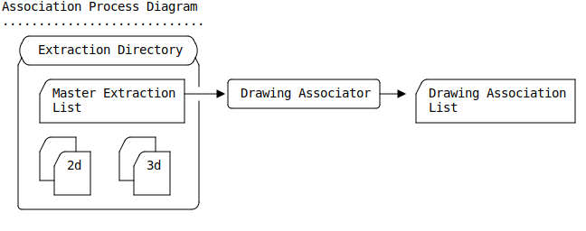
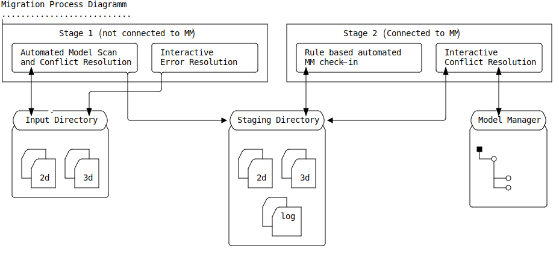
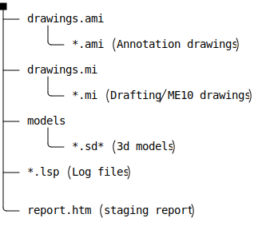

Modeling Extension Module Keysight Migrator
The Keysight Migrator extension module for Modeling provides dialogs and tools to facilitate the import of 3d models and 2d drawings contained in local folders to ModelManager in preparation for migrating the data to Enovia.
Getting Started
- Extension Module Installation and Startup
- Extension Module Customization Overview
- The Extension Module User Interface
Migration Processes and Tools
Drawing Association
The Drawing Association Tool [keysight_drawing_associator] uses comma
separated records read from a Master Extraction List to obtain information about
drawings and 3d models (parts / assemblies) located in an 'extraction folder'.
This information is used in the following ways to establish an association between
drawings and 3d models (parts / assemblies):
- The 3d models referenced by the Master Extraction List are scanned for instances
- Each drawing referenced in the Master Extraction List is loaded into Modeling in order to inquire the sysids of the 3d models referenced the drawing.
- The sysids obtained from the drawing are matched against the sysids obtained in step 1. The match result is reported in the output csv file (drawing associations file).
- If enabled a metadata match is applied to drawings which incomplete matching in the previous step. The 3d models matching the metadata criteria are reported in the output csv file.

Migration of unmanaged 2d/3d Data to ModelManager
The migration process imports unmanaged models and drawings from a local folder to ModelManager in a two-stage process. Data is passed between the stages via file system directories.

where:
Input Directory- is a local folder containing Drafting or Annotation drawings (*.mi; .ami) and 3d models (.sd?; *.sd?c; *.xmit (ME30); *.bdl; *.pkg; *.sdexp). This folder can contain a user defined sub-directory structure.
Staging Directory-
A work folder which is used to pass processed models and drawings to the check-in stage (stage 2). this directory typically has following structure and contents:

Model Manager- The
ModelManagerdatabase where the models and drawings are to be managed.
The process has two distinct stages each of which can be interrupted and resumed at any point.
- Stage 1 (not connected to MM)
-
This stage does not require the ModelManager module to be activated nor does it require the user to have ModelManager specific knowledge.
All models and drawings contained in the
Input Directoryare loaded into Modeling to perform specific actions:- Drawings:
- Determine the drawing type (Annotation or ME10).
- Log drawing owners for Annotation drawings.
- Copy Annotation to
drawings.amiin theStaging Directory - Copy Drafting (ME10) to
drawings.amiin theStaging Directory
- 3d Models
- Reintegrate versioned parts
- Mark simplified objects as untouchable and delete the simplifiication feature.
- Mark PC Board Assemblies as untouchable and delete any contained coordinate systems.
- Run a part-check.
- Resolve SYSID conflicts (by assigning new sysids to convert sysid conflicts into model name conflicts).
- Save each loaded model (top-level instance) to
modelsin theStaging Directory
During processing of models and drawings a report of required user actions is compiled. The user is expected to address all items in the action list before handing the
Staging Directorydown to stage 2. - Drawings:
- Stage 2 (Connected to ModelManager)
-
This stage requires the ModelManager module to be activated. The user is expected to have basic ModelManager knowledge to perform the assisted check-ins. The import uses the data passed down from stage 1 in the
Staging Directory.All models and drawings contained in the
Input Directoryare loaded into Modeling via an Assisted Check-in dialog which:- presents a table of 'model-name conflicts' which the user can resolve by.
- Assigning a new model name
- Replacing the conflicting object with an object already present in ModelManager
- Loads all associated drawings for check-in.
- presents a table of 'model-name conflicts' which the user can resolve by.
Programming Interfaces
Lisp packages in this module
| Name | Summary |
|---|---|
keysight-migrator |
Primary Lisp package of the ky_migrator Modeling extension module. |
Programming Interfaces
Lisp packages in this module
| Name | Summary |
|---|---|
keysight-migrator |
Primary Lisp package of the ky_migrator Modeling extension module. |